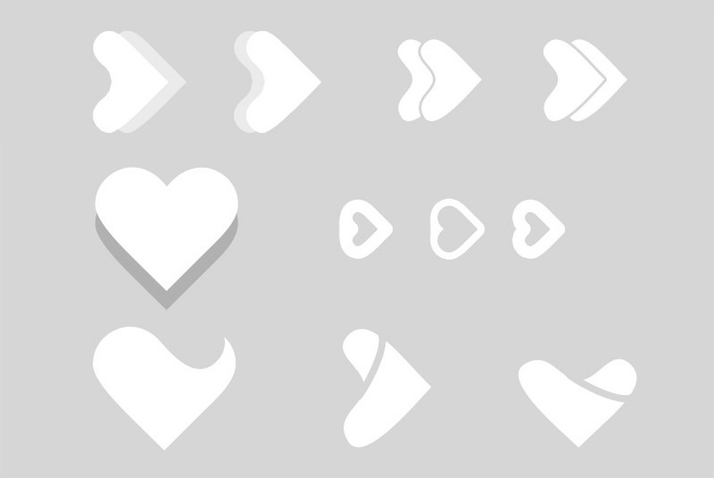
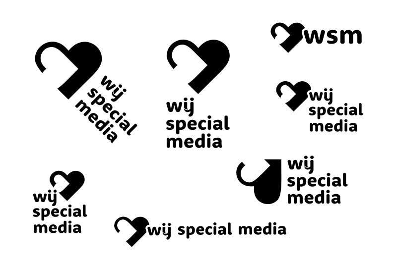
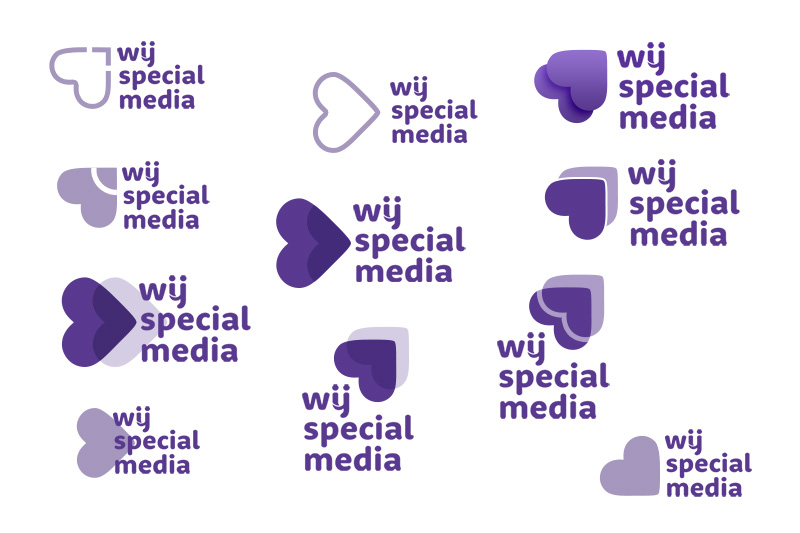
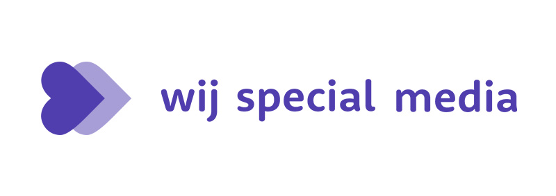
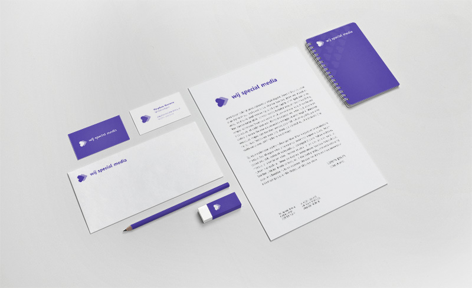

Na het nieuwe logo was het ook noodzakelijk om de zakelijke huisstijl te herzien. Omdat het nieuwe WIJ-logo voor de consumentendoelgroep was bedoeld, was het interessant om voor de zakelijke doelgroep een andere richting te bedenken. Met als thema: In het hart van de doelgroep.
De eerste conceptschetsen.
 Al snel ontstond het idee om twee harten te gebruiken zodat er symbolisch een hart met een pijl of een fastforward icoon te zien is.
 Hierboven de totale uitwerking. Het is echter niet definitief geworden omdat het consumentenmerk ook heel herkenbaar was bij zakelijke klanten.